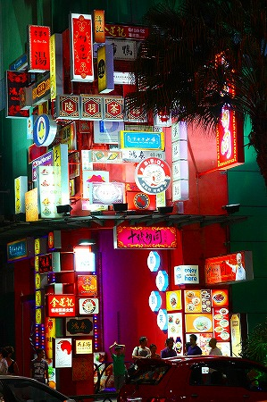

馬来西亜珍寺大行進、最後までお付合いいただきましてありがとうございました＆お疲れ様でした。
最後にだらだらとおまけ画像を。
視線
クアラルンプールの下町。

ほぼ全域が近代化している首都だが、植民地時代を彷彿とさせる建物がビルの合間に残っている。
そんな街を歩いているとどこかから熱い視線が…
これか！
マレー人女性の必須アイテムであるスカーフのディスプレイだった。
さらにこんな店も。
見慣れないだけにチョットびっくりしました。
多民族国家
街角で見かけた注意書き。
上から絵文字、マレー語、英語、中国語、アラビア語、ヒンズー語…かな。
この国のヒエラルキーを如実に物語っている。
多民族国家ってこういうことなんですね。
看板
CIMBという銀行のキャラは帽子をかぶったタコ。たこ焼屋みたい。
クアラルンプールの高層ビルの屋上にいたものだから、色んなところで見かけました。
形状としてはあまりキャラ向きではないですね。
アジアのお約束
世界一高かったビル。ペトロナスツインタワー。
にあるショッピングセンター。
こちらは別のショッピングセンター。

アジアのどの街に行ってもこの手の円形吹き抜け3～6階建てのショッピングセンターだらけ。もういい加減飽きた。
と言いながら規模の大きい書店があるからついつい行っちゃうんだよねー。
メガミックス具合ではここのほうが凄かったです。ザ雑居ビルてな感じで。

素敵な乗り物
マラッカは世界遺産に指定された超観光地だけに浮かれっぷりもハンパない。
一番浮かれているのがこのトライショーというサイドカー式人力車。
ド派手な飾りつけのトライショーはマラッカの中心部のあちこちを闊歩している。
観光客だけでなく地元の人も使っている。今でも庶民の足なのだ。
ただ、コレに乗って街中を移動するのはかなり恥ずかしい。
日が暮れるとトライショーに明かりが灯る。
こんなのが暗い夜道を激走している光景は中々素敵だ。
白人さんも大喜び。
残念
マラッカの裏名所、民族と美の博物館。
残念ながら改装のため閉まっていた（2012年当時）。
世界各地の奇習から民族の美意識を考えるという博物館。
要は首長族や刺青、纏足といった変形された人体の展示がメインだったみたい。
ただ、ここの展示の大半は随分前にクアラルンプールの国立博物館で見ているから、まあ、いいか。
日本人の背中一面の刺青を綺麗に剥いだ展示が凄かったです。
ジョンカーストリート
ジョンカーストリートはマラッカで一番にぎやかな通り。
いわゆる東西混成のババニョニャ様式の建物が並んでいる。
東洋っぽくもあり西洋っぽくもある。
でも逆を言えばどちらでもない。そしてマレーシアの土着文化でもイスラムの文化でもない。
つまりババニョニャ様式とは
全部込み込みの文化であると同時に
どこでもない様式でもあるのだ。
その中でも目を引くあざやかな建物。
中を覗き込んでみると大きなカミサマがいらっしゃいました。
ポケットパークのようなところにムキムキのお方が。
マレーシアボディビルダーの父とあった。ミスターユニバースだそうで。
後姿。
いわゆるパリパリ！ってやつですか？銅像はともかくベンチとトイレがあって休憩にはもってこいでした。
旧正月やや過ぎた時期なので浮かれた街がさらに浮かれていた。
屋外に常設されているステージ。
ヤングとルーニーを従えたパク・チソンがミスターポテトを掲げていた。3者の表情の落差に色んな事情が見え隠れ。
東南アジアではプレミアリーグが人気だが、特にマンチェスターユナイテッドは人気のチームだ。
今後マレーシアやタイ、シンガポール、ミャンマー辺りでは香川のポスターや広告が氾濫することであろうよ。
ヒンズー寺院
青雲亭のあるジャラン・トゥカン・エマスは実に不思議な通りだ。
道教寺院とモスクとヒンズー寺院が隣同士仲良く並んでいるのだ。
そういえば以前訪れたペナンでも同じようにひとつのブロックに様々な宗教の施設があって驚いた。
これがマレーシア流の民族混在スタイルなのだろうか。
で、こちらはヒンズー寺院のスリ・ポタヤ・ヴィナヤ・ムーティ寺院
ヒンズー寺院にしては地味だが、入り口のゴープラム（塔状の門）の神様のレリーフがかわいかったです。
モスク
同じくジャラン・トゥカン・エマスにあるモスク、カンポン・クリン・モスク。
通りに面してミナレットが建っているが、モスクというより仏塔っぽい。
モスク建築にはあまり詳しくないが、これはかなり異形のモスクだと思う。
ババニョニャモスクとしか言いようのない様々な建築的言語を内包した猛烈なエキゾチック建築だ。
↑左の緑色の屋根は本堂（という呼び方でいいのかな？）である。
瓦葺きで二重屋根。でも仏教寺院ではない。モスクなのだ。
我々がイスラム教、あるいはモスクというものを想像する場合、純粋なアラビア建築およびアラビア文化をイメージしがちだが、実はマレーシアやインドネシアといった東南アジア、あるいは北アフリカにもイスラム国家は存在する。
イスラム教をアラブのモノカルチャーとして捉えているととんでもないしっぺ返しを食うかも知れない。日本にもモスクあるわけだし。
日本の仏教もそうなんだけど土着化した外来宗教って本来の姿からずれ込む面白さがあるね。
沐浴場。
墓。
本堂の縁側。木造建築とイスラム教という異質の組み合わせだが、マレーシアらしいといえばらしい。
本堂内部。モスクだけにガランとしている。
一人だけ礼拝している人がいた。
本堂の中から上を見上げると、2階に相当する部分に隠し部屋がある。
まるで
金沢の忍者寺のような不思議な建築的ギミック。
こういうの大好きだなあ。
マラッカ点景
マラッカの街で葬式を見かけた。
いわゆる葬儀専用の会館で、葬式が始まる前だったようだ。
死者への供物である冥宅の左右には男女の人形があった。
これは何を意味するのだろう？
ショッピングセンターのメインホールで開かれていた結婚式のフェア。
婚礼に関する様々な業者がブースを出し、結婚予定のカップルが真剣な面持ちで相談していた。
婚礼ドレスのファッションショーやパーティー用のケータリングの試食、婚礼写真のプレビューなどなどマレー人の婚礼事情が垣間見えて、ついついじっくり見てしまった。
長屋には各戸ごとの柱に天官賜福と書かれた小さな祭壇が祀られていた。
天官賜福は道教の神様の天官が福をもたらす、という民間信仰で、沖縄でも天官賜福の札を家の棟に貼るという。
マラッカにもいました！
ギャラリーにあった絵。
生気のない夫婦と子供の姿はわが国の
ムカサリ絵馬を惹起させる。印象的な絵だった。
ちなみにお股丸出しズボンは中国の赤ちゃんファッションのスタンダードだ。
というわけで、まとめるつもりなどまるで無いままおしまいです。ごきげんよう。
おしまい
馬来西亜珍寺大行進
珍寺大道場 HOME